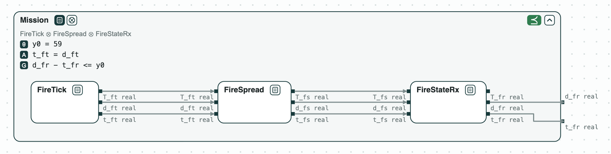
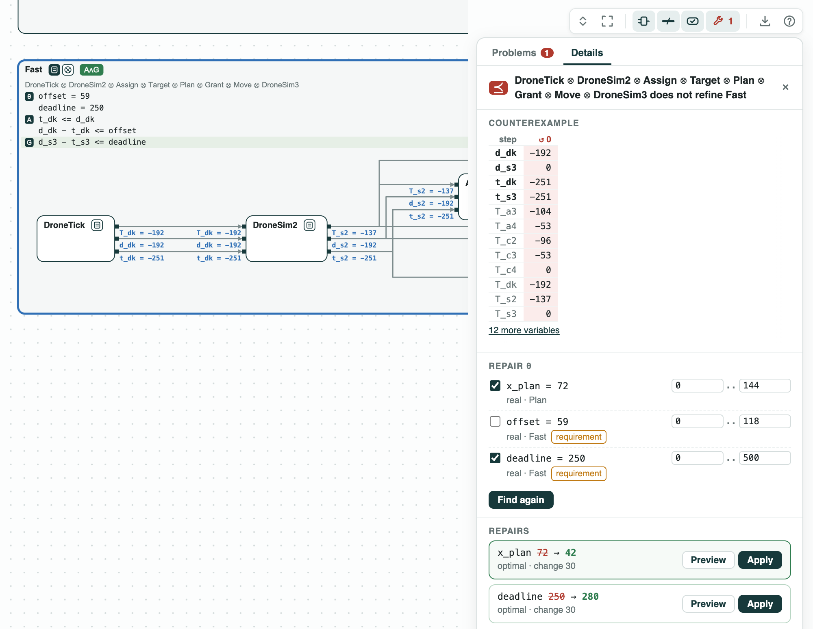

Drone timing: the bound, a faster timer, and its repair#
The system. Three drones put out fires on a grid, coordinated over a
network. The software is written in Lingua Franca, where each component
runs reactions (pieces of code triggered by an event). This is the
multi-drone fire suppression of ContrACT (Xiao, Lutz, Castillo-Effen,
Nuzzo, MEMOCODE 2026), with the worst-case times of each reaction of its
Table III. Each event v has three times: its timestamp t_v (when it
is due, on the logical clock), its start d_v, and its completion
T_v. In the pictures, T_c3 is the completion of the planner and
d_s3 - t_s3 the delay of the move of a drone.
The mission subgraph (the fire spreads, the coordinator reads it)
delays the timer of the drones by an offset, at most y0. The pipeline
of a drone goes from its timer to a move: report the cell, get a target,
plan, have the move granted, move. The drones do not wait for each
other, so one pipeline gives the bound of each. Each reaction is a
contract over these times (it starts when its inputs complete and takes
at most its latency), on real numbers, checked by z3. Available asks
the move within lam of the timestamp, given the offset.
The question. Each drone must move within 400 ms of its timer. Is the bound met, and by how much? With a faster timer of 250 ms, what fails, and what is the least change that fixes it? The answer says how fast the timer of the drones can run.
The steps#
Step 1. The mission. The mission subgraph refines Mission (every behavior of the three reactions meets it): it delays the drones by at most 59 ms, its worst case. This is the offset of step 2.


Step 2. The bound holds. The pipeline refines Available with
lam = 400. One optimization over all its behaviors gives the worst
case, 280 ms: 59 ms of offset, 55 to report the cell, 33 to assign a
target and 8 to take it, 72 to plan, and 53 to send the move. By hand
this means following the longest path through the waits.
Step 3. A faster timer fails. The pipeline does not refine Fast, which asks for 250 ms. The counterexample gives each event a time: the drone timer starts 59 ms late and the move starts 251 ms after its timestamp.


Step 4. Repair. repair changes one named constant as little as
possible so that the check passes, and proves that no smaller change
works. On the requirement: deadline = 280, 30 ms more. On the planner:
x_plan = 42, 30 ms less, since planning is on the longest path. The
pipeline with x_plan = 42 refines Fast.
Step 5. The margins. Under the bound of 400 ms, repair as an
optimization gives the slowest planner, x_plan = 192 ms, and the
largest delay of the mission, offset = 179 ms: each 120 ms more than
now, the slack of step 2.
The tags of the pictures are explained on the page Diagrams.
Run it#
pip install "chase-cps[z3]"
python dronetiming.py --expect
chase-cps view dronetiming.ltl --check --serveThe files of the demo are in the repository; Running the demos says what the scripts print and how to use the diagrams.